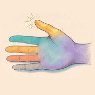

الخصوصية في تزكية
تزكية منصة للأسرة في الأخلاق والتزكية، تقدّمها مؤسسة تمسك للبحوث والنشر والتدريب.
دون حساب
يعمل التطبيق كله دون حساب، ويبقى تقدّمك وتدوينك على جهازك.
بحساب جوجل، إن اخترته
- ما نحفظ:
- بريدك ورقم حسابك في جوجل؛
- رابط صورة حسابك في جوجل، لتظهر صورةً لملفك في التطبيق؛
- أسماء الملفات كما تكتبها؛
- التدوين والتقدّم؛
- وقت إقرارك بأنك فوق ثماني عشرة سنة، إن أقررت.
- الغاية: أن يبقى ذلك محفوظًا إن ضاع جهازك، وأن تجده على أجهزتك الأخرى.
- الأبناء: ملفات داخل حساب الوالد، بلا بريد ولا دخول خاص بهم.
أين تُحفظ
- المكان: على خوادم Cloudflare التي تستضيف الموقع، مشفّرة في الحفظ وفي النقل. وتعالج Cloudflare عنوان IP لكل زيارة لتخدم الموقع وتحميه.
- المشاركة: لا يُباع شيء ولا يُشارك، ولا إعلانات ولا تتبّع.
- عدّ الزيارات: قد نعدّها عدًّا مجهولًا لا يعرّف أحدًا.
- ملفات تعريف الارتباط: اثنان فقط، واحد يبقيك داخل حسابك، وآخر يعيش دقائق أثناء الدخول بجوجل.
الذكاء الاصطناعي للكبار وحدهم
- لمن: لصاحب الحساب في طبعة الكبار، في ملفه هو، بعد إقراره بأنه فوق ثماني عشرة سنة وموافقته مرة واحدة في صفحة التدوين. لا يعمل في طبعة الصغار ولا في ملفات الأبناء، ولا يُرسل إليه نص طفل.
- من يعالج النص: شركة OpenAI، بنموذج GPT عبر واجهتها البرمجية، معالِجًا يعمل لحسابنا.
- ماذا يُرسل ومتى: حين يحفظ الكبير صفحة في التدوين، أو يصوّر صفحة من دفتره، أو يطلب تحليل صفحة قديمة: نص تلك الصفحة أو صورتها، ولغة الواجهة، وجنس الكاتب إن ذكره لتصحّ العربية. لا يُرسل البريد ولا الاسم ولا رقم الحساب.
- الحفظ عند OpenAI: نطلب ألّا يُحفظ الطلب، وOpenAI لا تدرّب نماذجها على ما يصلها من واجهتها البرمجية. وتبقي سجلات مراقبة سوء الاستعمال ثلاثين يومًا على الأكثر، ثم تمحوها.
- عندنا: لا يُحفظ النص المرسَل ولا الصورة على خادمنا، ولا يدخلان أي سجل. تُحفظ السطور العائدة في تدوينك بتاريخ الصفحة، والصفحة المصوّرة تُحفظ نصًّا في دفترك، وكل ذلك يُعدَّل ويُحذف كأي سطر.
- الإيقاف: زر «أوقفه» في صفحة التدوين يوقف الإرسال في الحال.
الاقتراحات
- ما يُحفظ: نص الاقتراح، والشاشة التي أُرسل منها، والطبعة واللغة، ووقت وصوله. والبريد إن كتبته لتتلقى ردًّا.
- ما لا يُحفظ: عنوان IP، ولا حسابك. إلا إن كنت داخلًا حسابك واخترت «يمكنكم مراسلتي على بريد حسابي»، فيُربط الاقتراح بحسابك لنردّ عليك.
- لماذا: نقرؤها لنحسّن التطبيق. لا تُنشر ولا تُشارك.
- الصغار: لا تطلب طبعة الصغار نصًّا من الأطفال. الاقتراحات تأتي من طبعة الكبار، ومن صفحة الوالدين.
- المحو: الاقتراح المربوط بحساب يُمحى مع الحساب. ولمحو اقتراحات أرسلتها ببريدك، راسلنا من البريد نفسه.
المحو
ما تحذفه يُمحى من الخادم في الحال:
- سطر؛
- أو ملف؛
- أو صفحة التحديات في ختام السنة؛
- أو الحساب كله، من «احذف حسابي» في الإعدادات.
التواصل
لسؤال أو طلب يخص بياناتك: privacy@tazkiya.family، أو واتساب.
آخر تحديث: 27 نوفمبر 2026.
Privacy in Tazkiya
Tazkiya is a family platform for good character and self-purification, offered by the Temessek Foundation for Research, Publishing and Training.
Without an account
The whole app works without an account, and your progress and journal stay on your device.
With a Google account, if you choose one
- What we keep:
- your email and Google account number;
- the link to your Google account picture, shown as your profile picture in the app;
- profile names as you write them;
- your journal and progress;
- the time you stated you are over eighteen, if you did.
- Why: so it survives a lost device and you find it on your other devices.
- Children: they are profiles inside the parent's account, with no email or sign-in of their own.
Where it is kept
- Where: on the servers of Cloudflare, which hosts the site, encrypted at rest and in transit. Cloudflare processes the IP address of each visit to serve and protect the site.
- Sharing: nothing is sold or shared, and there are no ads and no tracking.
- Visit counts: we may count visits anonymously, without identifying anyone.
- Cookies: only two, one to keep you signed in and a short one during Google sign-in.
AI, for adults only
- For whom: the account holder in the adult edition, in their own profile, after stating they are over eighteen and agreeing once on the journal page. It never runs in the children's edition or in a child's profile, and a child's text is never sent to it.
- Who processes the text: OpenAI, with a GPT model through its API, as a processor working for us.
- What is sent, and when: when the adult saves a journal page, photographs a page of their notebook, or asks for an older page to be analysed: that page's text or photo, the app's language, and the writer's gender if they gave it, so the Arabic is right. No email, name or account number is sent.
- Kept at OpenAI: we ask that the request is not stored, and OpenAI does not train its models on what reaches it through its API. It keeps abuse-monitoring logs for 30 days at most, then erases them.
- Kept with us: the text or photo sent is not kept on our server and goes into no log. The lines that come back are saved in your journal with the page's date, a photographed page is saved as text in your notebook, and all of it can be edited or deleted like any line.
- Turning it off: "Turn off" on the journal page stops the sending at once.
Suggestions
- What is kept: the suggestion, the screen it was sent from, the edition and language, and when it arrived. Your email too, if you give one for a reply.
- What is not kept: your IP address, and your account. The one exception: if you are signed in and choose "You may contact me at my account email", the suggestion is linked to your account so we can reply.
- Why: we read them to improve the app. They are not published or shared.
- Children: the children's edition asks children for no text. Suggestions come from the adult edition and from the parents' page.
- Erasing: a suggestion linked to an account is erased with the account. To erase suggestions you sent with your email, write to us from that email.
Erasing
Whatever you delete is erased from the server at once:
- a line;
- or a profile;
- or the challenges page at the close of the year;
- or the whole account, from "Delete my account" in settings.
Contact
For a question or a request about your data: privacy@tazkiya.family, or WhatsApp.
Last updated: 27 November 2026.